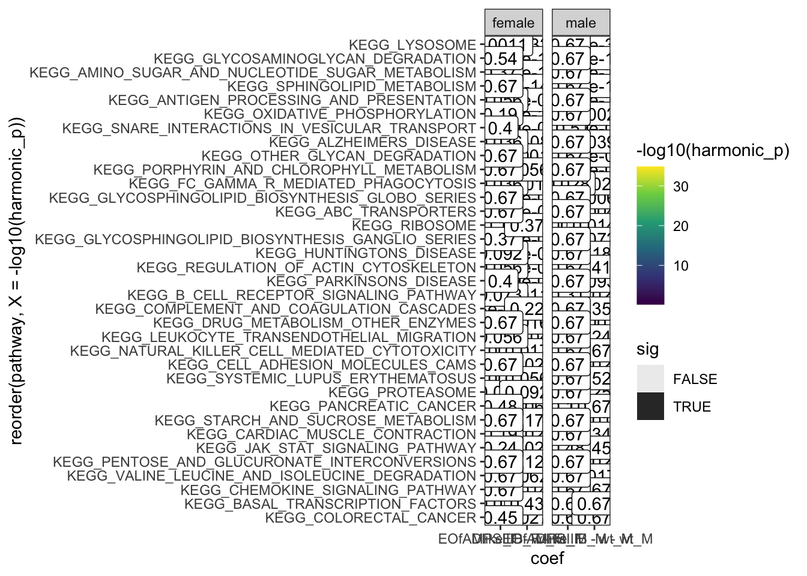

proteomics
Karissa Barthelson
2024-07-29
Last updated: 2024-11-01
Checks: 7 0
Knit directory:
2021_MPSIIIBvQ96-RNAseq-7dpfLarve/
This reproducible R Markdown analysis was created with workflowr (version 1.7.1). The Checks tab describes the reproducibility checks that were applied when the results were created. The Past versions tab lists the development history.
Great! Since the R Markdown file has been committed to the Git repository, you know the exact version of the code that produced these results.
Great job! The global environment was empty. Objects defined in the global environment can affect the analysis in your R Markdown file in unknown ways. For reproduciblity it’s best to always run the code in an empty environment.
The command set.seed(20211120) was run prior to running
the code in the R Markdown file. Setting a seed ensures that any results
that rely on randomness, e.g. subsampling or permutations, are
reproducible.
Great job! Recording the operating system, R version, and package versions is critical for reproducibility.
Nice! There were no cached chunks for this analysis, so you can be confident that you successfully produced the results during this run.
Great job! Using relative paths to the files within your workflowr project makes it easier to run your code on other machines.
Great! You are using Git for version control. Tracking code development and connecting the code version to the results is critical for reproducibility.
The results in this page were generated with repository version 7bb9ce6. See the Past versions tab to see a history of the changes made to the R Markdown and HTML files.
Note that you need to be careful to ensure that all relevant files for
the analysis have been committed to Git prior to generating the results
(you can use wflow_publish or
wflow_git_commit). workflowr only checks the R Markdown
file, but you know if there are other scripts or data files that it
depends on. Below is the status of the Git repository when the results
were generated:
Ignored files:
Ignored: .DS_Store
Ignored: .RData
Ignored: .Rapp.history
Ignored: .Rhistory
Ignored: .Rproj.user/
Ignored: analysis/.DS_Store
Ignored: code/.DS_Store
Ignored: code/6mBrain_RNAseq_genoSex.rmd
Ignored: code/6mBrain_fems.rmd
Ignored: code/HS.R
Ignored: code/about.Rmd
Ignored: code/analysis.Rmd
Ignored: code/analysis_final.rmd
Ignored: code/analysis_final_v2.rmd
Ignored: code/checkGenotypes.rmd
Ignored: code/explorationRUV.Rmd
Ignored: code/genotypeCheck.Rmd
Ignored: code/license.Rmd
Ignored: code/nhi6mdata.rmd
Ignored: code/plots4pub2.rmd
Ignored: code/plots4pub_RNAseq_afterreview1.R
Ignored: code/wgcna.rmd
Ignored: data/.DS_Store
Ignored: data/Nhi_data/.DS_Store
Ignored: data/R_objects/.DS_Store
Ignored: data/R_objects/larvae/.DS_Store
Ignored: data/adult_brain/.DS_Store
Ignored: data/adult_brain/05_featureCounts/.DS_Store
Ignored: data/adult_brain/fastqc_raw/.DS_Store
Ignored: data/gene_sets/.DS_Store
Ignored: data/larvae/.DS_Store
Ignored: data/larvae/fastqc_align/.DS_Store
Ignored: data/larvae/fastqc_align_dedup/.DS_Store
Ignored: data/larvae/fastqc_raw/.DS_Store
Ignored: data/larvae/fastqc_trim/.DS_Store
Ignored: data/larvae/featureCounts/.DS_Store
Ignored: data/larvae/meta/.DS_Store
Ignored: data/larvae/starAlignLog/.DS_Store
Ignored: output/.DS_Store
Ignored: output/plots/
Ignored: output/plots4poster/.DS_Store
Ignored: output/plots4pub/
Untracked files:
Untracked: Rplot01.pdf
Untracked: Rplot02.png
Untracked: data/R_objects/adult_brain/HMPKEGG_6m_brain_genosex_CQN.rds
Untracked: data/R_objects/adult_brain/HMP_ire_6m_brain_genosex_CQN.rds
Untracked: data/R_objects/adult_brain/cqn_logCPM_6m_brain.rds
Untracked: data/R_objects/adult_brain/dge_6m_brain_cqn.rds
Untracked: data/R_objects/adult_brain/fry_cell_6m_brain_genosex_CQN.rds
Untracked: data/R_objects/adult_brain/fry_cell_RNAseq.rds
Untracked: data/R_objects/adult_brain/goseqtibbles_6m_brain_genosex_CQN.rds
Untracked: data/R_objects/adult_brain/hmp.kegg.rna.rds
Untracked: data/R_objects/adult_brain/toptablescqn_bysex.rds
Untracked: data/allLLIDs.rds
Untracked: data/ensembl_zebrafish.rds
Untracked: data/proteomics/
Untracked: data/with_go_evidence.rds
Untracked: dre00020.pathview.multi.png
Untracked: dre00020.png
Untracked: dre00020.xml
Untracked: hsa04650.EOfADproteomes.multi.png
Untracked: hsa04650.MPSIIIBproteomes.multi.png
Untracked: hsa04650.png
Untracked: hsa04650.xml
Untracked: hsa04666.EOfADproteomes.multi.png
Untracked: hsa04666.MPSIIIBproteomes.multi.png
Untracked: hsa04666.png
Untracked: hsa04666.xml
Untracked: larvae dre00020.pathview.multi.png
Untracked: output/DE_proteins_for_string/
Untracked: output/GOenrichment_enrichmentTable.csv
Untracked: output/plots4RADposter/
Untracked: output/plots4kim/
Untracked: output/plots4pub2/
Untracked: output/plots4pub3/
Untracked: output/spreadsheets/RNAseqlarvae_celltypeFry.xlsx
Untracked: output/spreadsheets/RNAseqlarvae_hmpoutputs.xlsx
Untracked: output/spreadsheets/geneset_RNAseq_v2.xlsx
Untracked: output/spreadsheets/goseq_RNAseq_v2.xlsx
Untracked: output/spreadsheets/limma_proteomics_6mbrain.xlsx
Untracked: output/spreadsheets/proteomics_6mbrain_hmpoutputs.xlsx
Untracked: output/spreadsheets/toptables_RNAseq_v2.xlsx
Untracked: output/spreadsheets/~$limma_proteomics_6mbrain.xlsx
Untracked: temp.png
Unstaged changes:
Modified: .gitignore
Deleted: analysis/6mBrain_fems.rmd
Deleted: analysis/HS.R
Deleted: analysis/about.Rmd
Deleted: analysis/analysis.Rmd
Deleted: analysis/analysis_adultbrain.knit.md
Deleted: analysis/analysis_final.rmd
Deleted: analysis/checkGenotypes.rmd
Deleted: analysis/explorationRUV.Rmd
Deleted: analysis/genotypeCheck.Rmd
Deleted: analysis/license.Rmd
Deleted: analysis/nhi6mdata.rmd
Deleted: analysis/plots4pub2.rmd
Modified: data/R_objects/adult_brain/dge.rds
Modified: data/R_objects/adult_brain/hmp_ire.rds
Modified: data/R_objects/adult_brain/logcpm.rds
Modified: data/R_objects/larvae/celltype_larvae.rds
Modified: data/R_objects/larvae/dge.rds
Modified: data/R_objects/larvae/hmp_ire.rds
Modified: data/R_objects/larvae/hmp_kegg.rds
Modified: data/R_objects/larvae/logcpm.rds
Modified: data/R_objects/larvae/toptablescqn.rds
Modified: data/adult_brain/karissas_metadata.xlsx
Modified: output/spreadsheets/toptables_cqn.xlsx
Note that any generated files, e.g. HTML, png, CSS, etc., are not included in this status report because it is ok for generated content to have uncommitted changes.
These are the previous versions of the repository in which changes were
made to the R Markdown (analysis/proteomics.rmd) and HTML
(docs/proteomics.html) files. If you’ve configured a remote
Git repository (see ?wflow_git_remote), click on the
hyperlinks in the table below to view the files as they were in that
past version.
| File | Version | Author | Date | Message |
|---|---|---|---|---|
| Rmd | 7bb9ce6 | Karissa Barthelson | 2024-11-01 | wflow_publish("analysis/*") |
Introduction
library(tidyverse)
library(magrittr)
library(readxl)
library(openxlsx) # for exporting sheets
# vis
library(ggpubr)
library(scales)
library(ggfortify)
library(clusterProfiler)
library(ComplexHeatmap)
library(circlize)
library(tidyHeatmap)
library(RColorBrewer)
library(pander)
library(ggrepel)
library(ggpol)
library(UpSetR)
# analysis
library(limma)
library(Biobase)
library(goseq)
library(fgsea)
library(harmonicmeanp)
library(STRINGdb)
# annotation
library(AnnotationDbi)
library(UniProt.ws)
library(AnnotationHub)
library(biomaRt)
library(msigdbr)
theme_set(theme_bw() +
theme(
plot.title = element_text(hjust = 0.5),
plot.subtitle = element_text(hjust = 0.5)
))files <- list.files("data/proteomics", full.names = T)
# read in the data from Rachael and Marten
data <- read_tsv("data/proteomics/2024_FU_Kar_Bar_01_no_normalisation_Report.tsv")
# read in metadata and tidy up columns
meta <-
read_excel(
path = grep(files, pattern = "proteomics/Q96.+meta.xlsx", value = TRUE),
sheet = "Proteomics") %>%
mutate(
fish_id = as.character(fish_id),
sex = toupper(sex) %>% as.factor(),
genotype = factor(
genotype,
levels = c("wt", "EOfAD-like", "MPS IIIB")
)
) %>%
dplyr::filter(fish_id != 8) %>%
mutate(
geno_sex = paste0(genotype, "_", sex) %>%
factor(
levels = c("wt_M", "MPS IIIB_M", "EOfAD-like_M",
"wt_F", "MPS IIIB_F", "EOfAD-like_F" )
)
)Annotations
I’ve come to learn that protein annotations (IDs etc) are very messy. So I’m going to do my best here to join
This hasnt worked. About half the detected proteins are not annotated with an ensembl ID. But I have nice gene name symbols, so will now try ensembl biomart.
biomart
# connect to biomart
mart <- useEnsembl(
biomart="ensembl",
dataset = "drerio_gene_ensembl")
# list all the attributes (e.g. columns) available for DL from biomart
# listAttributes(mart) %>% as_tibble() %>% view
# define what I want from biomart.
# have to break it up as they only let you d/l 3 things at a time.
attb2get.part1 = c("external_gene_name", "ensembl_gene_id", "chromosome_name")
attb2get.part2 = c("ensembl_gene_id", "description", "gene_biotype")
attb2get.part3 = c("ensembl_gene_id", "uniprotsptrembl", "uniprot_gn_id")
attb2get.part4 = c("ensembl_gene_id", "uniprot_gn_symbol", "uniprotswissprot")
attb2get.part5 = c("external_gene_name", "start_position", "end_position")
attb2get.part6 = c("external_gene_name","hsapiens_homolog_associated_gene_name") # for converting for pathview since some KEGG pways dont have a zf map.
# filters
# listFilters(mart) %>% as_tibble() %>% view
bm.anno <-
getBM(
attributes = attb2get.part1,
filters = 'external_gene_name',
values = data$PG.Genes %>% unique,
mart = mart) %>%
left_join(
getBM(
attributes = attb2get.part2,
filters = 'external_gene_name',
values = data$PG.Genes %>% unique,
mart = mart)
) %>%
as_tibble()
bm.anno.3 <- getBM(
attributes = attb2get.part3,
filters = 'external_gene_name',
values = data$PG.Genes %>% unique,
mart = mart
) %>%
as_tibble()
bm.anno.4 <- getBM(
attributes = attb2get.part4,
filters = 'external_gene_name',
values = data$PG.Genes %>% unique,
mart = mart
) %>%
as_tibble()
bm.anno.start.end <- getBM(
attributes = attb2get.part5,
filters = 'external_gene_name',
values = data$PG.Genes %>% unique,
mart = mart
) %>%
as_tibble()
bm.dr2hs<- getBM(
attributes = attb2get.part6,
filters = 'external_gene_name',
values = data$PG.Genes %>% unique,
mart = mart
) %>%
as_tibble()all
t1 <- tibble(
gene_name = data$PG.Genes
)
t2 <- bm.anno %>%
dplyr::select(
gene_name = external_gene_name,
gene_id = ensembl_gene_id)
t3 <- bm.anno.4 %>%
dplyr::select(
gene_name = uniprot_gn_symbol,
gene_id = ensembl_gene_id
)
# t4 <- ah %>%
# dplyr::select(
# gene_name = SYMBOL,
# gene_id = ENSEMBL
# )
# use all availale annotations so far
anno_all <- list(t1, t2, t3) %>%
purrr::reduce(full_join,.init = t1, by = "gene_name") %>%
# resolve duplicates
pivot_longer(
names_to = "gene_id_temp", values_to = "gene_id",
starts_with("gene_id")
) %>%
dplyr::select(-gene_id_temp) %>%
na.omit() %>%
uniqueThe proteome which was used to annotate the MS peaks were from Uniprot: https://www.uniprot.org/proteomes/UP000000437
I found this table: https://www.uniprot.org/uniprotkb?query=(proteome:UP000000437), where I selected some relevant columns and downloaded the table. This is read in below.
# read in uniprot proteome data file
uniprot_proteome_annotation <- files %>%
grep(pattern = "uniprot", value = TRUE) %>%
read_tsv() %>%
dplyr::rename("PG.ProteinNames" = `Entry Name` )
# tidy up the coumn names
uniprot_proteome_annotation %<>%
dplyr::select(
gene_name = "Gene Names (primary)",
uniprot_id = Entry,
length = Length,
entrez = GeneID,
chromosome = Proteomes,
description = `Protein names`,
other_gene_names = `Gene Names`,
ensembl_tx_id = Ensembl,
up_organism = PG.ProteinNames
) %>%
mutate(
chromosome = str_remove(chromosome, pattern = "UP000000437: "),
entrez = str_remove(entrez, pattern = ";"),
)
anno <-
data %>%
dplyr::rename(
uniprot_id = PG.ProteinGroups
) %>%
left_join(uniprot_proteome_annotation,
by = "uniprot_id" ) %>%
dplyr::select(gene_name, uniprot_id,
colnames(uniprot_proteome_annotation)
) %>%
column_to_rownames("uniprot_id")number of fish per genotype and sex
meta %>%
ggplot(
aes(x = genotype, fill = genotype)
) +
geom_bar() +
facet_wrap(~sex)data.long <- data %>%
pivot_longer(
names_to = "sample",
values_to = "intensity",
starts_with("[")
) %>%
# need to create a new column "fish_id", which matches with the metadata sheet.
mutate(
fish_id = str_extract(
sample, pattern = " [:digit:]{1,2}"
) %>%
str_remove(pattern = " ")
) %>%
dplyr::select(
fish_id, PG.Genes, intensity, everything()
) %>%
left_join(meta) %>%
dplyr::filter(!is.na(genotype))
data.long.withQC <- data %>%
pivot_longer(
names_to = "sample",
values_to = "intensity",
starts_with("[")
) %>%
# need to create a new column "fish_id", which matches with the metadata sheet.
mutate(
fish_id = str_extract(
sample, pattern = " [:digit:]{1,2}"
) %>%
str_remove(pattern = " ")
) %>%
dplyr::select(
fish_id, PG.Genes, intensity, everything()
) %>%
left_join(meta)check missing values
# see how many proteins have missing values
proteins.with.missing.values <- data.long %>%
.[is.na(.$intensity),] %>%
.$PG.ProteinGroups %>%
uniqueThere are 1421 proteins with missing values total in this dataset.
This is all of the proteins, I next looked at whether any proteins were only present in at least one genotype. These are the protens which show this below. None are convincing neough to really be able to set the value to 0 in any of the other samples.
proteins.missing.perGeno <-
data.long %>%
group_by(PG.ProteinGroups, genotype) %>%
dplyr::filter(all(is.na(intensity))) %>%
.$PG.Genes %>% unique
data.long %>%
dplyr::filter(PG.Genes %in% proteins.missing.perGeno) %>%
ggplot(
aes(x = geno_sex, y = intensity)
) +
geom_boxplot(
outlier.shape = NA
) +
geom_point() +
facet_wrap(~PG.Genes, scales = "free_y")Proteins which have missing values are omitted for this analysis. Out
of the 9,942 proteins detected,
length(proteins.with.missing.values) %>% comma have
missing values. I think this is OK.
data.wide <-
data.long %>%
dplyr::filter(fish_id %in% meta$fish_id) %>%
dplyr::filter(!(PG.ProteinGroups %in% proteins.with.missing.values)) %>%
dplyr::select(fish_id, PG.ProteinGroups, intensity) %>%
pivot_wider(
names_from = "fish_id",
values_from = "intensity"
) %>%
column_to_rownames("PG.ProteinGroups")
data.long %<>%
dplyr::filter(fish_id %in% meta$fish_id) %>%
dplyr::filter(fish_id != 8) %>%
dplyr::filter(!(PG.ProteinGroups %in% proteins.with.missing.values))Normalisation and transformation
I want to look at how I should normalise the data, a few ways I can do this. However, from the plots below, log-transformed and median normalised looks best.
raw data
data.long.withQC %>%
ggplot(
aes(x = sample, y = intensity)
) +
geom_boxplot(
aes(fill = genotype)
) +
ggtitle("raw data") +
theme(
axis.text.x = element_text(
angle = -45, hjust = 0
)
)# raw data
raw.boxplot <- data.long %>%
ggplot(
aes(x = fish_id, y = intensity)
) +
geom_boxplot(
aes(fill = genotype)
) +
ggtitle("raw data")
raw.boxplotlog transformed
ggarrange(raw.boxplot,
# log-transformed data
data.long %>%
mutate(intensity = log2(intensity)) %>%
ggplot(
aes(x = fish_id, y = intensity)
) +
geom_boxplot(
aes(fill = genotype)
) +
labs(
title = "log2 transformed"
),
common.legend = TRUE,
nrow = 2
)log-transformed and quantile normalised
# quantile normaised and log-transformed
data.long %>%
# convert to wide format to be able to quantile normalise.
dplyr::select(fish_id, PG.ProteinGroups, intensity) %>%
mutate(intensity = log2(intensity)) %>%
pivot_wider(
names_from = "fish_id", values_from = "intensity"
) %>%
column_to_rownames("PG.ProteinGroups") %>%
limma::normalizeBetweenArrays(method = "quantile") %>%
as.data.frame() %>%
rownames_to_column("protein_id") %>%
# convert back to long.
pivot_longer(
names_to = "fish_id", values_to = "intensity",
cols = data.long$fish_id %>% unique()
) %>%
left_join(meta) %>%
ggplot(
aes(x = fish_id, y = intensity)
) +
geom_boxplot(
aes(fill = genotype)
) +
labs(
title = "log2-transformed and quantile normalised"
)data.long.withQC %>%
dplyr::select(sample, PG.ProteinGroups, intensity) %>%
mutate(intensity = log2(intensity)) %>%
pivot_wider(
names_from = "sample", values_from = "intensity"
) %>%
column_to_rownames("PG.ProteinGroups") %>%
limma::normalizeBetweenArrays(method = "quantile") %>%
as.data.frame() %>%
rownames_to_column("protein_id") %>%
# convert back to long.
pivot_longer(
names_to = "sample", values_to = "intensity",
cols = data.long.withQC$sample %>% unique()
) %>%
ggplot(
aes(x = sample, y = intensity)
) +
geom_boxplot(
) +
labs(
title = "log2-transformed and quantile normalised"
) +
theme(
axis.text.x = element_text(angle = -45, hjust = 0)
)log transformed and median normalised
# quantile normaised and log-transformed
data.long %>%
# convert to wide format to be able to quantile normalise.
dplyr::select(fish_id, PG.ProteinGroups, intensity) %>%
mutate(intensity = log2(intensity)) %>%
pivot_wider(
names_from = "fish_id", values_from = "intensity"
) %>%
column_to_rownames("PG.ProteinGroups") %>%
limma::normalizeBetweenArrays(method = "scale") %>%
as.data.frame() %>%
rownames_to_column("protein_id") %>%
# convert back to long.
pivot_longer(
names_to = "fish_id", values_to = "intensity",
cols = data.long$fish_id %>% unique()
) %>%
left_join(meta) %>%
ggplot(
aes(x = fish_id, y = intensity)
) +
geom_boxplot(
aes(fill = genotype)
) +
labs(
title = "log2-transformed and median normalised"
)data.long.withQC %>%
dplyr::select(sample, PG.ProteinGroups, intensity) %>%
mutate(intensity = log2(intensity)) %>%
pivot_wider(
names_from = "sample", values_from = "intensity"
) %>%
column_to_rownames("PG.ProteinGroups") %>%
limma::normalizeBetweenArrays(method = "scale") %>%
as.data.frame() %>%
rownames_to_column("protein_id") %>%
# convert back to long.
pivot_longer(
names_to = "sample", values_to = "intensity",
cols = data.long.withQC$sample %>% unique()
) %>%
ggplot(
aes(x = sample, y = intensity)
) +
geom_boxplot(
) +
labs(
title = "log2-transformed and median normalised"
) +
theme(
axis.text.x = element_text(angle = -45, hjust = 0)
)PCAs
I first want to use PCA to first get a feel for the overall similarity between samples. I also want to see which normalisation technique I should use.
PCA cant handle missing values, so only the proteins detected in all samples are used here.
ggarrange(
# raw PCA
data.wide %>%
t() %>%
prcomp %>%
autoplot(
data = tibble(fish_id = rownames(.$x)) %>%
left_join(meta),
colour = "genotype",
shape = "sex",
size = 4
) +
ggtitle("raw data"),
# log transformed PCA
data.long %>%
# convert to wide format to be able to quantile normalise.
dplyr::select(fish_id, PG.ProteinGroups, intensity) %>%
mutate(intensity = log2(intensity)) %>%
pivot_wider(
names_from = "fish_id", values_from = "intensity"
) %>%
column_to_rownames("PG.ProteinGroups") %>%
t() %>%
prcomp %>%
autoplot(
data = tibble(fish_id = rownames(.$x)) %>%
left_join(meta),
colour = "genotype",
shape = "sex",
size = 4
) +
ggtitle("log-transformed data"),
# log-transformed and quantile normalised
data.wide %>%
limma::normalizeBetweenArrays(method = "quantile") %>%
t() %>%
prcomp %>%
autoplot(
data = tibble(fish_id = rownames(.$x)) %>%
left_join(meta),
colour = "genotype",
shape = "sex",
size = 4
) +
ggtitle("log2-transformed, quantile-normalised data"),
# log-transformed and median normalised
data.wide %>%
limma::normalizeBetweenArrays(method = "scale") %>%
t() %>%
prcomp %>%
autoplot(
data = tibble(fish_id = rownames(.$x)) %>%
left_join(meta),
colour = "genotype",
shape = "sex",
size = 4
) +
ggtitle("log2-transformed, median-normalised data"),
common.legend = TRUE
)Quantile normalization forces the entire empirical distribution of each column to be identical. Median normalisaiton forces the sample distributions to have the same median. From the PCA plots above, quantile normalisation appear to be the best as it gives the best seperation between groups. Median normalisation also looks okay.
PCAs by sex
Since there appears to be pretty clear sex effects, I will next look at the PCAs within each sex.
fem.fish.ids <-
meta %>%
dplyr::filter(sex == "F") %>%
.$fish_id
male.fish.ids <-
meta %>%
dplyr::filter(sex == "M") %>%
.$fish_idggarrange(
data.wide %>%
limma::normalizeBetweenArrays(method = "quantile") %>%
t() %>%
prcomp %>%
autoplot(
data = tibble(fish_id = rownames(.$x)) %>%
left_join(meta),
colour = "genotype",
shape = "sex",
size = 4
) +
labs(title = "All samps",
# subtitle = "log2-transformed, median-normalised data"
),
data.wide %>%
limma::normalizeBetweenArrays(method = "quantile") %>%
.[,fem.fish.ids] %>%
t() %>%
prcomp %>%
autoplot(
data = tibble(fish_id = rownames(.$x)) %>%
left_join(meta),
colour = "genotype",
size = 4
) +
labs(title = "Females",
#subtitle = "log2-transformed, median-normalised data"
) ,
data.wide %>%
limma::normalizeBetweenArrays(method = "quantile") %>%
.[,male.fish.ids] %>%
t() %>%
prcomp %>%
autoplot(
data = tibble(fish_id = rownames(.$x)) %>%
left_join(meta),
colour = "genotype",
size = 4
) +
labs(title = "Males",
#subtitle = "log2-transformed, median-normalised data"
),
common.legend = T, nrow = 1
)There appears to be an outlier in both groups. But will leave it in.
PC1 is explained by MPS IIIB genotype in both sexes. PC1 explains about 30% of the total variation in the dataset, so MPS IIIB genotype is pretty severe effect on the brain proteoms.
DE protein analysis using limma
First, I need to put the data in a format usable for
limma. I will use an expresisonSet object which will map
the metadata and annotations.
meta4eset <- meta %>%
column_to_rownames("fish_id")
meta4eset <- new("AnnotatedDataFrame",data=meta4eset)
anno %<>%
mutate(uniprot_id = rownames(.)) %>%
dplyr::filter(!(uniprot_id %in% proteins.with.missing.values))
anno4eset <- new("AnnotatedDataFrame", data=anno)eset <- ExpressionSet(
assayData = data.wide %>%
log2() %>%
limma::normalizeBetweenArrays(method = "quantile"),
phenoData = meta4eset,
featureData = anno4eset
)design and contrasts matrix
An intercept free design matrix and contrasts matix were generated so that i can performed pair-wise constrats between each mutant and their wild type sibs within sexes. A really nice ref explaining the bg knowledge about these are found here:
https://bioconductor.org/packages/release/workflows/vignettes/RNAseq123/inst/doc/designmatrices.html
# design matrix specifiying the groups
design <- model.matrix(~0 + geno_sex, data = pData(eset)) %>%
set_colnames(gsub(colnames(.), pattern = "geno_sex", replacement = "")) %>%
set_colnames(gsub(colnames(.), pattern = " ", replacement = "")) %>%
set_colnames(gsub(colnames(.), pattern = "-", replacement = ""))
# contrats matrix specifying the comparisons
contrasts <- makeContrasts(
MPSIIIB_M - wt_M , # effect of MPS IIIB in males
MPSIIIB_F - wt_F, # effect of MPS IIIB in females
EOfADlike_M - wt_M, # effect of EOfAD in males
EOfADlike_F - wt_F, # effect of EOfAD in females
# wt_M - wt_F, # effect of gender
levels = design
)linear model fit with emperical bayes moderation
These functions are used to rank genes in order of evidence for differential expression. They use an empirical Bayes method to squeeze the protein-wise residual variances towards a common value (or towards a global trend) (Smyth, 2004; Phipson et al, 2016). The degrees of freedom for the individual variances are increased to reflect the extra information gained from the empirical Bayes moderation, resulting in increased statistical power to detect differential expression.
Toptables are called for each contrast, as defined in the design matrix.
lm.fit <-
lmFit(eset, design) %>%
contrasts.fit(contrasts) %>%
eBayes(robust = TRUE)
toptables <- colnames(contrasts) %>%
sapply(function(x) {
topTable(
lm.fit,
coef = x,
adjust.method = "fdr" ,
sort.by = "p",
Inf
) %>%
rownames_to_column("accession") %>%
left_join(
anno %>% rownames_to_column("accession")
) %>%
mutate(
DE = adj.P.Val < 0.05,
coef = x
) %>%
dplyr::select(
# put columns in a nice order, renaming some on the fly
gene_name, logFC, AveExpr, t,
pval = P.Value, FDR = adj.P.Val, DE, coef, B, everything()
) %>%
as_tibble
}, simplify = F)Visualisation
num of DE genes
toptables %>%
lapply(
function(x) {
x %>%
dplyr::filter(DE == T) %>%
nrow
}
) %>%
bind_rows() %>%
as.data.frame() %>%
pivot_longer(
names_to = "coef",
values_to = "nDE",
cols = everything()
) %>%
ggplot(
aes(x = nDE, y = reorder(coef, nDE))
) +
geom_col()volcano plots
toptables %>%
bind_rows() %>%
ggplot(
aes(x = logFC, y = -log10(pval))
) +
geom_point(
aes(colour = DE),
alpha = 0.5) +
facet_wrap(~coef) +
scale_color_manual(values = c("grey50", "red"))MD plots
toptables %>%
bind_rows() %>%
ggplot(
aes(x = AveExpr, y = logFC)
) +
geom_point(
aes(colour = DE),
alpha = 0.5) +
geom_hline(yintercept = 0) +
coord_cartesian(ylim = c(-2,2)) +
geom_smooth(se = F) +
facet_wrap(~coef) +
scale_color_manual(values = c("grey50", "red"))length check
In RNA-seq data, there is a known bias for gene length with differential expression. Longer genes have more reads aligning to them, and so have slightly increased statistical power.
This could be also true for proteomics data, where longer proteins would have more peptides in the pool. So first, I want to check the the t-statistic vs the protein length. The blue line of best fit hangs around 0, and so not really a bias here.
toptables %>%
bind_rows() %>%
mutate(
length = as.numeric(length),
) %>%
ggplot(aes(x = length, y = t)) +
geom_point(
aes(colour = DE),
alpha = 0.5) +
geom_hline(yintercept = 0) +
geom_smooth(se = F) +
coord_cartesian(xlim = c(0,5000)) +
facet_wrap(~coef) +
scale_color_manual(values = c("grey50", "red"))Marten also says to look at the intensity of the proteins. This is
reflected by the averageexp column calculated by
limma.
Below are the plots of protein length by average expression. The line of best fit looks strange as there is a really long protein here.
toptables %>%
bind_rows() %>%
mutate(
length = as.numeric(length),
) %>%
ggplot(aes(x = length, y = AveExpr)) +
geom_point(
aes(colour = DE),
alpha = 0.5) +
geom_label_repel(
aes(label = gene_name),
data = . %>%
dplyr::filter(length > 10000)
) +
geom_hline(yintercept = 0) +
geom_smooth(se = F) +
#coord_cartesian(xlim = c(0,5000)) +
facet_wrap(~coef) +
scale_color_manual(values = c("grey50", "red"))The same plots are geneated below, although this time only proteins less than 5000 AAs are kept. Short proteins appear to be more highly expressed.
toptables %>%
bind_rows() %>%
dplyr::filter(length < 5000) %>%
mutate(
length = as.numeric(length),
) %>%
ggplot(aes(x = length, y = AveExpr)) +
geom_point(
aes(colour = DE),
alpha = 0.5) +
geom_label_repel(
aes(label = gene_name),
data = . %>%
dplyr::filter(length > 10000)
) +
geom_smooth(se = F) +
#coord_cartesian(xlim = c(0,1000)) +
facet_wrap(~coef) +
scale_color_manual(values = c("grey50", "red"))Also looking at the raw intensity values in the QC samples (which is a pool of all my samples, run 3 different times throughout the MS run)
data.long.withQC %>%
dplyr::filter(
grepl(sample, pattern = "QC"),
!is.na(intensity)
) %>%
left_join(anno %>%
dplyr::rename(PG.ProteinGroups = uniprot_id) ) %>%
ggplot(
aes(x = length, y = intensity)
) +
geom_point() +
facet_wrap(~sample)Within the QC sample,s the shorter proteins have higer intensity generally. But there are so many more shorter proteins.
data.long.withQC %>%
dplyr::filter(
grepl(sample, pattern = "QC"), # only the QC samples
!is.na(intensity), # any proteins not detected
) %>%
left_join(anno %>%
dplyr::rename(PG.ProteinGroups = uniprot_id) ) %>%
dplyr::filter(length < 5000) %>% # long proteins
ggplot(
aes(x = length, y = intensity)
) +
geom_point() +
geom_smooth() +
facet_wrap(~sample)Hmm.. talk with Marten about this.
Enrichment analyses
protein sets
KEGG
KEGG gene sets were obtaoned from MsigDB using
msigdbr. Only proteins detected (without missing data) in
this experiment were used as the background. KEGG gene sets were also
filtered if they contained more than at least 4 proteins, as less than
that is a bit hard to interpret biologically
KEGG <-
msigdbr("Danio rerio", category = "C2", subcategory = "CP:KEGG") %>%
distinct(gs_name, gene_symbol, .keep_all = TRUE) %>%
dplyr::filter(gene_symbol %in% toptables$`MPSIIIB_M - wt_M`$gene_name) %>%
split(f = .$gs_name) %>%
lapply(extract2, "gene_symbol")
# calculate the number of genes per gene set
sizes.KEGG <- KEGG %>%
lapply(length) %>%
unlist %>%
as.data.frame() %>%
set_colnames( "n_genes") %>%
rownames_to_column("gs")
# retain gene sets with at least 5 genes in it
KEGG <- KEGG[sizes.KEGG %>% dplyr::filter(n_genes >= 4) %>% .$gs]Gene ontologies
Gene ontologies were also obtained from msigdbr. The
ontologies were filtered to only contain those more than 3 nodes away
from the root to reduce redundancy. Like the KEGG gene sets, the GO
terms were filtered to only contain proteins detected in the
analysis.
# GO Terms
goSummaries <- url("https://uofabioinformaticshub.github.io/summaries2GO/data/goSummaries.RDS") %>%
readRDS() %>%
mutate(
Term = Term(id),
gs_name = Term %>% str_to_upper() %>% str_replace_all("[ -]", "_"),
gs_name = paste0("GO_", gs_name)
)
minPath <- 3
GO <-
msigdbr("Danio rerio", category = "C5") %>%
dplyr::filter(grepl(gs_name, pattern = "^GO")) %>%
mutate(
gs_fullname = gs_name,
gs_name = str_replace(gs_name, pattern = "GOBP_", replacement = "GO_"),
gs_name = str_replace(gs_name, pattern = "GOMF_", replacement = "GO_"),
gs_name = str_replace(gs_name, pattern = "GOCC_", replacement = "GO_")
) %>%
left_join(goSummaries) %>%
dplyr::filter(shortest_path >= minPath) %>%
distinct(gs_name, gene_symbol, .keep_all = TRUE) %>%
dplyr::select(gs_fullname, gene_symbol) %>%
dplyr::filter(gene_symbol %in% toptables$`MPSIIIB_M - wt_M`$gene_name) %>%
na.omit %>%
split(f = .$gs_fullname) %>%
lapply(extract2, "gene_symbol")
# calculate the number of genes per gene set
sizes.GO <- GO %>%
lapply(length) %>%
unlist %>%
as.data.frame() %>%
set_colnames( "n_genes") %>%
rownames_to_column("gs")
# retain gene sets with at least 3 genes in it
GO <- GO[sizes.GO %>% dplyr::filter(n_genes > 3) %>% .$gs] cell type markers
Cell type marker proteins were obtained from Jiang et at. 2021.
cell_type_markers <-
read_xlsx("data/gene_sets/Suppdata2_jiangetal_2021_fcelldev.xlsx", sheet = "Brain") %>%
dplyr::rename("gene_name" = gene) %>%
dplyr::filter(gene_name %in% toptables$`MPSIIIB_M - wt_M`$gene_name) %>%
split(f = .$`cell type`) %>%
lapply(extract2, "gene_name")chromosome protein sets
Also want to look at whether there are any chr-specific effects as we see in the RNAseq data.
chr <- anno %>%
as_tibble() %>%
mutate(
chr = str_extract(chromosome, pattern = "\\d{1,2}"), # the first 1 or 2 numbers.
) %>%
dplyr::select(gene_name, chromosome, chr) %>%
# only retain proteins detected in this exp.
dplyr::filter(gene_name %in% toptables$`MPSIIIB_M - wt_M`$gene_name) %>%
split(f = .$chr) %>%
lapply(extract2, "gene_name")IRE gene sets
I downloaded the IRE gene csv for zerbrafish described in Hin et al. from here https://github.com/nhihin/ire/blob/master/data/ire/zebrafish/zebrafishIreGenes.rds
This is a list of genes which contain IREs in their 5’ or 3’ UTR, and whether it is predicted as high quality or ot. The list is in ensembl gene ids, so need to convert to gene name.
ire_gene <- readRDS("data/gene_sets/zebrafishIreGenes.rds") %>%
unlist() %>%
as_tibble() %>%
set_colnames("ensembl_gene_id")
bm.ire <-
getBM(
attributes = c("external_gene_name", "ensembl_gene_id"),
filters = 'ensembl_gene_id',
values = ire_gene$ensembl_gene_id %>% unique,
mart = mart)
ire <- readRDS("data/gene_sets/zebrafishIreGenes.rds") %>%
lapply( function(x) {
x %>%
as_tibble %>%
set_colnames("ensembl_gene_id") %>%
left_join(bm.ire) %>%
dplyr::filter(external_gene_name != "") %>%
.$external_gene_name %>%
unique()
})Over representation analysis using goseq
To test for over-representation of GO terms within the significantly DE proteins, I used goseq. For the bias data, I chose protein length, as longer proteins would have more peptides associated with them. Despite no obvious relationship between protein length and logFC/DE status.
pwfs <- toptables %>%
lapply(function(x) {
x %>%
dplyr::filter(!is.na(gene_name)) %>% # omit proteins with no gene names
dplyr::distinct(gene_name, .keep_all = TRUE) %>%
with(
nullp(
DEgenes = structure(DE, names = gene_name),
bias.data = length,
)
)
})
goseq <- pwfs %>%
sapply(function(x){
goseq(x, gene2cat = GO) %>%
as_tibble() %>%
dplyr::filter(numDEInCat > 0) %>%
mutate(
# a few protein sets show a pval of 0, which is not really right.
# probs a really small value would be suffient.
over_represented_pvalue = case_when(
over_represented_pvalue == 0 ~ 1e-50,
TRUE ~ over_represented_pvalue
),
FDR = p.adjust(over_represented_pvalue, method = "fdr")
) %>%
dplyr::select(-under_represented_pvalue,
pvalue = over_represented_pvalue)
}, simplify = FALSE)
# add names to goseq tibbles
goseq %<>%
map2(names(.), ~.x %>% mutate(contrast = .y))
# define the interesting gene sets
goseq.sig.gs <- goseq %>%
bind_rows() %>%
dplyr::filter(grepl(contrast, pattern = "MPS")) %>%
dplyr::filter(FDR < 0.01) %>%
.$category %>%
unique
# plot the results
# goseq$`MPSIIIB_M - wt_M` %>%
# bind_rows(goseq$`MPSIIIB_F - wt_F`) %>%
# arrange(pvalue) %>%
# dplyr::filter(category %in% goseq.sig.gs) %>%
# mutate(
# sig = FDR < 0.05,
# GO_type = case_when(
# grepl(category, pattern = "^GOCC") ~ "CC",
# grepl(category, pattern = "^GOBP") ~ "BP",
# grepl(category, pattern = "^GOMF") ~ "MF"
# ),
# category = str_remove(category, pattern = "GO\\w{2}_"),
# category = str_replace_all(category, pattern = "_", replacement = " "),
# category = str_wrap(category, width = 46)
# ) %>%
# ggplot(
# aes(x = contrast, y = reorder(category,
# X = -log10(pvalue)))
# ) +
# geom_tile(
# aes(fill = -log10(pvalue),
# alpha = FDR < 0.05)
# ) +
# geom_label(
# aes(label = signif(FDR, 2))
# ) +
# facet_wrap(~GO_type, scales = "free") +
# scale_fill_viridis_c()harmonic mean p
Consistency with the transctiptome will be applied here by calculating the HMP value of the KEGG gene sets.
# a function to run the HMP calculation.
runHMP = function(
geneset,
eset,
toptable,
design,
contrasts
) {
# update the eset to have gene names as the rownames,
#as this is what im mapping to the gene sets
fry.input <- exprs(eset) %>%
as.data.frame() %>%
rownames_to_column("uniprot_id") %>%
left_join(anno %>%
dplyr::select(gene_name, uniprot_id)) %>%
dplyr::distinct(gene_name, .keep_all = TRUE) %>%
dplyr::filter(!is.na(gene_name)) %>%
column_to_rownames("gene_name") %>%
dplyr::select(-uniprot_id)
# run fry
fry <- colnames(contrasts) %>%
sapply(function(y) {
fry.input %>%
limma::fry(
index = geneset,
design = design,
contrast = contrasts[,y],
sort = "mixed"
) %>%
rownames_to_column("pathway") %>%
as_tibble() %>%
mutate(coef = y)
}, simplify = FALSE)
# run camera
camera <- colnames(contrasts) %>%
sapply(function(y) {
fry.input %>%
limma::camera(
index = geneset,
design = design,
contrast = contrasts[,y]
) %>%
rownames_to_column("pathway") %>%
as_tibble() %>%
mutate(coef = y)
}, simplify = FALSE)
# create ranks for fgsea
ranks <- toptables %>%
sapply(function(y) {
y %>%
arrange(t) %>%
dplyr::select(gene_name, t) %>% #only want the Pvalue with sign
with(structure(t, names = gene_name)) %>%
rev() # reverse so the start of the list is upregulated genes
}, simplify = FALSE)
# run fgsea
set.seed(1)
fgsea <- ranks %>%
sapply(function(x){
fgseaMultilevel(stats = x,
pathways = geneset) %>%
as_tibble() %>%
dplyr::rename(FDR = padj) %>%
mutate(padj = p.adjust(pval, "bonferroni")) %>%
dplyr::select(pathway, pval, FDR, padj, everything()) %>%
arrange(pval)
}, simplify = F)
fgsea %<>%
map2(names(.), ~.x %>% mutate(coef = .y))
# calculate HMP
hmp <- fry %>%
bind_rows() %>%
dplyr::select(pathway, PValue.Mixed, coef) %>%
dplyr::rename(fry_p = PValue.Mixed) %>%
left_join(camera %>%
bind_rows() %>%
dplyr::select(pathway, PValue, coef),
by = c("pathway", "coef")) %>%
dplyr::rename(camera_p = PValue) %>%
left_join(fgsea %>%
bind_rows() %>%
dplyr::select(pathway, pval, coef),
by = c("pathway", "coef")) %>%
dplyr::rename(fgsea_p = pval) %>%
bind_rows() %>%
nest(p = one_of(c("fry_p", "camera_p", "fgsea_p"))) %>%
mutate(harmonic_p = vapply(p, function(x){
x <- unlist(x)
x <- x[!is.na(x)]
p.hmp(x, L = 4)
}, numeric(1))
) %>%
unnest() %>%
mutate(harmonic_p_FDR = p.adjust(harmonic_p, "fdr"),
sig = harmonic_p_FDR < 0.05) %>%
arrange(harmonic_p)
return(list(hmp = hmp,
fgsea = fgsea))
}KEGG gene sets
hmp.kegg <- runHMP(
geneset = KEGG,
eset = eset,
toptable = toptables,
design = design,
contrasts = contrasts
)
# define sig paths
hmp.KEGG.sig.paths <- hmp.kegg$hmp %>%
dplyr::filter(coef != "wt_M - wt_F") %>%
dplyr::filter(harmonic_p_FDR < 0.03) %>%
.$pathway %>%
unique
hmp.kegg$hmp %>%
dplyr::filter(coef != "wt_M - wt_F") %>%
dplyr::filter(pathway %in% hmp.KEGG.sig.paths) %>%
mutate(
sex = case_when(
grepl(coef, pattern = "_F") ~ "female",
grepl(coef, pattern = "_M") ~ "male"
)
) %>%
ggplot(
aes(x = coef, y = reorder(pathway,
X = -log10(harmonic_p)))
) +
geom_tile(
aes(fill = -log10(harmonic_p), alpha = sig)
) +
geom_label(
aes(label = signif(harmonic_p_FDR, 2))
) +
scale_fill_viridis_c() +
facet_wrap(~sex, scales = "free_x")
# define gs that are sig in at least 2 coefs
n.kegg.sig.hmp <- hmp.kegg$hmp %>%
dplyr::filter(coef != "wt_M - wt_F") %>%
dplyr::filter(harmonic_p_FDR < 0.05) %>%
group_by(pathway) %>%
summarise(n = n()) %>%
ungroup %>%
dplyr::filter(n > 1)
hmp.kegg$hmp %>%
#dplyr::filter(coef != "wt_M - wt_F") %>%
dplyr::filter(pathway %in% n.kegg.sig.hmp$pathway) %>%
mutate(
sex = case_when(
grepl(coef, pattern = "_F") ~ "female",
grepl(coef, pattern = "_M") ~ "male"
),
pathway = str_replace_all(pathway, pattern = "_", replacement = " "),
pathway = str_remove(pathway, pattern = "KEGG "),
pathway = str_wrap(pathway, width = 30),
coef = str_remove(coef, pattern = "- wt.+")
) %>%
ggplot(
aes(x = coef, y = reorder(pathway,
X = -log10(harmonic_p)))
) +
geom_tile(
aes(fill = -log10(harmonic_p),
#alpha = harmonic_p_FDR < 0.05
),
) +
geom_label(
aes(label = signif(harmonic_p_FDR, 2)),
data = . %>%
dplyr::filter(harmonic_p_FDR < 0.1)
) +
scale_fill_viridis_c(
option = "viridis"
) +
facet_share(~sex, scales = "free_x") +
labs(
x = NA,
y = "KEGG pathway",
fill = "-log10(pvalue)",
alpha = "FDR < 0.05"
) +
theme(
axis.text.y = element_text(face = "bold"),
axis.text.x = element_text(face = "bold"),
strip.text = element_text(face = "bold")
)hmp.kegg$hmp %>%
dplyr::filter(pathway %in% c(
hmp.KEGG.sig.paths[1:10],
"KEGG_RIBOSOME",
"KEGG_COMPLEMENT_AND_COAGULATION_CASCADES"
)) %>%
mutate(
sex = case_when(
grepl(coef, pattern = "_F") ~ "female",
grepl(coef, pattern = "_M") ~ "male"
)
) %>%
ggplot(
aes(x = coef, y = reorder(pathway,
X = -log10(harmonic_p)))
) +
geom_tile(
aes(fill = -log10(harmonic_p), alpha = sig)
) +
geom_label(
aes(label = signif(harmonic_p_FDR, 2))
) +
scale_fill_viridis_c() +
facet_wrap(~sex, scales = "free_x") # ggsave("output/plots4kim/proteomes6mo.png",
# width = 18, height = 10, units = "cm", dpi = 600, scale = 2)ribosome
ribo.adult <-
toptables %>%
bind_rows() %>%
dplyr::filter(gene_name %in% KEGG$KEGG_RIBOSOME) %>%
dplyr::filter(coef != "wt_M - wt_F") %>%
dplyr::select(gene_name, logFC, coef) %>%
dplyr::distinct(gene_name, coef, .keep_all = T) %>%
spread(key = "coef", value = "logFC") %>%
column_to_rownames("gene_name") %>%
t
ribo.hm <- draw(
ComplexHeatmap::Heatmap(
# df for input
ribo.adult,
show_column_names = TRUE,
column_names_rot = 45,
column_title = "RIBOSOME",
col = colorRamp2(
breaks = seq(-0.3, 0.3, length.out = 100),
colors = colorRampPalette(rev(brewer.pal(n = 7, name = "RdBu")))(100)
),
name = "logFC", # name the legend
cluster_rows = TRUE,
heatmap_legend_param = list(
direction = "horizontal",
title_position = "topcenter"),
heatmap_width = unit(35, "cm"),
heatmap_height = unit(10, "cm"),
),
heatmap_legend_side = "top"
)oxphos
oxphos.adult <-
toptables %>%
bind_rows() %>%
dplyr::filter(gene_name %in% KEGG$KEGG_OXIDATIVE_PHOSPHORYLATION) %>%
dplyr::filter(coef != "wt_M - wt_F") %>%
dplyr::select(gene_name, logFC, coef) %>%
dplyr::distinct(gene_name, coef, .keep_all = T) %>%
spread(key = "coef", value = "logFC") %>%
column_to_rownames("gene_name") %>%
t
oxphos.hm <- draw(
ComplexHeatmap::Heatmap(
# df for input
oxphos.adult,
show_column_names = TRUE,
column_names_rot = 45,
column_title = "oxphos.adult",
col = colorRamp2(
breaks = seq(-0.3, 0.3, length.out = 100),
colors = colorRampPalette(rev(brewer.pal(n = 7, name = "RdBu")))(100)
),
name = "logFC", # name the legend
cluster_rows = TRUE,
heatmap_legend_param = list(
direction = "horizontal",
title_position = "topcenter"),
heatmap_width = unit(30, "cm"),
heatmap_height = unit(10, "cm"),
),
heatmap_legend_side = "top"
)lysosome
lyso.adult <-
toptables %>%
bind_rows() %>%
dplyr::filter(gene_name %in% KEGG$KEGG_LYSOSOME) %>%
dplyr::filter(coef != "wt_M - wt_F") %>%
dplyr::select(gene_name, logFC, coef) %>%
dplyr::distinct(gene_name, coef, .keep_all = T) %>%
spread(key = "coef", value = "logFC") %>%
column_to_rownames("gene_name")
ribo.hm <- draw(
ComplexHeatmap::Heatmap(
# df for input
lyso.adult,
show_column_names = TRUE,
column_names_rot = 45,
column_title = "LYSOSOME",
col = colorRamp2(
breaks = seq(-01, 01, length.out = 100),
colors = colorRampPalette(rev(brewer.pal(n = 7, name = "RdBu")))(100)
),
name = "logFC", # name the legend
cluster_rows = TRUE,
heatmap_legend_param = list(
direction = "vertical",
title_position = "topleft",
legend_height = unit(4, "cm")
),
heatmap_width = unit(10, "cm"),
heatmap_height = unit(20, "cm"),
),
heatmap_legend_side = "right"
)KEGG_FC_GAMMA_R_MEDIATED_PHAGOCYTOSIS
phago.adult <-
toptables %>%
bind_rows() %>%
dplyr::filter(gene_name %in% KEGG$KEGG_FC_GAMMA_R_MEDIATED_PHAGOCYTOSIS) %>%
dplyr::filter(coef != "wt_M - wt_F") %>%
dplyr::select(gene_name, logFC, coef) %>%
dplyr::distinct(gene_name, coef, .keep_all = T) %>%
spread(key = "coef", value = "logFC") %>%
column_to_rownames("gene_name")
phago.hm <- draw(
ComplexHeatmap::Heatmap(
# df for input
phago.adult,
show_column_names = TRUE,
column_names_rot = 45,
column_title = "KEGG_FC_GAMMA_R_MEDIATED_PHAGOCYTOSIS",
col = colorRamp2(
breaks = seq(-0.5, 0.5, length.out = 100),
colors = colorRampPalette(rev(brewer.pal(n = 7, name = "RdBu")))(100)
),
name = "logFC", # name the legend
cluster_rows = TRUE,
heatmap_legend_param = list(
direction = "vertical",
title_position = "topleft",
legend_height = unit(4, "cm")
),
heatmap_width = unit(10, "cm"),
heatmap_height = unit(25, "cm"),
),
heatmap_legend_side = "right"
)cell type marker gene sets
fry.input <- exprs(eset) %>%
as.data.frame() %>%
rownames_to_column("uniprot_id") %>%
left_join(anno %>%
dplyr::select(gene_name, uniprot_id)) %>%
dplyr::distinct(gene_name, .keep_all = TRUE) %>%
dplyr::filter(!is.na(gene_name)) %>%
column_to_rownames("gene_name") %>%
dplyr::select(-uniprot_id)
fry.cell <- colnames(contrasts) %>%
sapply(function(y) {
fry.input %>%
limma::fry(
index = cell_type_markers,
design = design,
contrast = contrasts[,y],
sort = "directional"
) %>%
rownames_to_column("pathway") %>%
as_tibble() %>%
mutate(coef = y)
}, simplify = FALSE)
# keep this to get theleadingEdege genes
hmp.cell <- runHMP(
geneset = cell_type_markers,
eset = eset,
toptable = toptables,
design = design,
contrasts = contrasts
)
fry.cell %>%
bind_rows() %>%
dplyr::filter(coef != "wt_M - wt_F") %>%
ggplot(
aes(x = coef, y = reorder(pathway,
X = -log10(PValue)))
) +
geom_tile(
aes(fill = -log10(PValue), alpha = FDR < 0.05)
) +
geom_label(
aes(label = signif(FDR, 2))
) +
scale_fill_viridis_c() facet_wrap(~sex, scales = "free_x")<ggproto object: Class FacetWrap, Facet, gg>
compute_layout: function
draw_back: function
draw_front: function
draw_labels: function
draw_panels: function
finish_data: function
init_scales: function
map_data: function
params: list
setup_data: function
setup_params: function
shrink: TRUE
train_scales: function
vars: function
super: <ggproto object: Class FacetWrap, Facet, gg>leadingEdge gene overlaps.
# svg("output/plots4pub3/celltype_protein_fems_LeadingEdgeUpSet.svg",
# width = 5, height = 5)
# females
hmp.cell$fgsea %>%
bind_rows() %>%
dplyr::filter(coef %in% grep(coef, pattern = "MPS", value = TRUE)) %>%
dplyr::filter(pathway %in%
c("Oligodendrocyte", "Oligodendrocyte_sla high",
"Microglia_apoc1 high", "Neural stem cell")) %>%
mutate(
coef = str_remove(coef, pattern = " - wt.+"),
coef_cell = paste0(coef, "_", pathway)
) %>%
dplyr::select(coef_cell, leadingEdge) %>%
dplyr::filter(
coef_cell == grep(coef_cell, pattern = "_F_", value = TRUE)
) %>%
split(f = .$coef_cell) %>%
lapply(function(x) {x$leadingEdge}[[1]]) %>%
fromList() %>%
upset(order.by = "freq",nsets = 4)# dev.off()# svg("output/plots4pub3/celltype_protein_males_LeadingEdgeUpSet.svg",
# width = 7, height = 5)
# males
hmp.cell$fgsea %>%
bind_rows() %>%
dplyr::filter(coef %in% grep(coef, pattern = "MPS", value = TRUE)) %>%
dplyr::filter(pathway %in%
c("Oligodendrocyte", "Oligodendrocyte_sla high",
"Microglia_apoc1 high", "Neural stem cell",
"Macrophage_grn1 high", "Neuroblast",
"Meningeal mural lymphatic endothelial cell"
)) %>%
mutate(
coef = str_remove(coef, pattern = " - wt.+"),
coef_cell = paste0(coef, "_", pathway)
) %>%
dplyr::select(coef_cell, leadingEdge) %>%
dplyr::filter(
coef_cell == grep(coef_cell, pattern = "_M_", value = TRUE)
) %>%
split(f = .$coef_cell) %>%
lapply(function(x) {x$leadingEdge}[[1]]) %>%
fromList() %>%
upset(order.by = "freq")# dev.off()cell.leadingEdge.protein <- hmp.cell$fgsea %>%
bind_rows() %>%
dplyr::filter(
coef %in% grep(coef, pattern = "MPS", value = TRUE),
pathway %in% c(
"Oligodendrocyte", "Oligodendrocyte_sla high",
"Microglia_apoc1 high", "Neural stem cell",
"Macrophage_grn1 high", "Meningeal mural lymphatic endothelial cell",
"Neuroblast"
)) %>%
mutate(
coef = str_remove(coef, pattern = " - wt.+"),
coef_cell = paste0(coef, "_", pathway)
) %>%
split(f = .$coef_cell) %>%
lapply(function(x) {
x$leadingEdge[[1]]
})
leadingEdge.F.proteins <- intersect(
cell.leadingEdge.protein$`MPSIIIB_F_Microglia_apoc1 high`,
cell.leadingEdge.protein$MPSIIIB_F_Oligodendrocyte) %>%
intersect(
cell.leadingEdge.protein$`MPSIIIB_F_Neural stem cell`) %>%
intersect(cell.leadingEdge.protein$`MPSIIIB_F_Oligodendrocyte_sla high`)
leadingEdge.F.proteins <- c(
leadingEdge.F.proteins,
intersect(
cell.leadingEdge.protein$`MPSIIIB_F_Microglia_apoc1 high`,
cell.leadingEdge.protein$MPSIIIB_F_Oligodendrocyte) %>%
intersect(cell.leadingEdge.protein$`MPSIIIB_F_Oligodendrocyte_sla high`),
intersect(
cell.leadingEdge.protein$`MPSIIIB_F_Microglia_apoc1 high`,
cell.leadingEdge.protein$MPSIIIB_F_Oligodendrocyte) %>%
intersect(cell.leadingEdge.protein$`MPSIIIB_F_Neural stem cell`)
) %>%
unique()
leadingEdge.M.proteins <- intersect(
cell.leadingEdge.protein$`MPSIIIB_M_Microglia_apoc1 high`,
cell.leadingEdge.protein$MPSIIIB_M_Oligodendrocyte) %>%
intersect(
cell.leadingEdge.protein$`MPSIIIB_M_Neural stem cell`) %>%
intersect(
cell.leadingEdge.protein$`MPSIIIB_F_Oligodendrocyte_sla high`)
leadingEdge.M.proteins %<>%
c(
intersect(
cell.leadingEdge.protein$`MPSIIIB_M_Oligodendrocyte_sla high`,
cell.leadingEdge.protein$`MPSIIIB_M_Microglia_apoc1 high`) %>%
intersect(
cell.leadingEdge.protein$MPSIIIB_M_Oligodendrocyte
)
) %>% unique()
# svg("output/plots4pub3/sharedleadingEdge_F.svg")
toptables %>%
bind_rows() %>%
dplyr::filter(gene_name %in% leadingEdge.F.proteins) %>%
tidyHeatmap::heatmap(
.row = coef,
.column = gene_name,
.value = logFC,
# colours
palette_value = circlize::colorRamp2(
seq(-1, 1, length.out = 11),
rev(RColorBrewer::brewer.pal(11, "RdBu"))),
rect_gp = grid::gpar(col = "#161616", lwd = 0.5),
# sizes
row_names_gp = gpar(fontsize = 14),
column_names_gp = gpar(fontsize = 14),
heatmap_width = unit(15, "cm"),
heatmap_height = unit(10, "cm"),
)# dev.off()
# svg("output/plots4pub3/sharedleadingEdge_M.svg")
toptables %>%
bind_rows() %>%
dplyr::filter(gene_name %in% leadingEdge.M.proteins) %>%
tidyHeatmap::heatmap(
.row = coef,
.column = gene_name,
.value = logFC,
# colours
palette_value = circlize::colorRamp2(
seq(-1, 1, length.out = 11),
rev(RColorBrewer::brewer.pal(11, "RdBu"))),
rect_gp = grid::gpar(col = "#161616", lwd = 0.5),
# sizes
row_names_gp = gpar(fontsize = 14),
column_names_gp = gpar(fontsize = 14),
heatmap_width = unit(15, "cm"),
heatmap_height = unit(10, "cm"),
)
# dev.off() IRE gene sets
ire.hmp <- runHMP(
geneset = ire,
eset = eset,
toptable = toptables,
design = design,
contrasts = contrasts)
ire.hmp$hmp %>%
bind_rows() %>%
mutate(
sex = case_when(
grepl(coef, pattern = "_F") ~ "female",
grepl(coef, pattern = "_M") ~ "male"
)
) %>%
ggplot(
aes(x = coef, y = reorder(pathway,
X = -log10(harmonic_p)))
) +
geom_tile(
aes(fill = -log10(harmonic_p), alpha = sig)
) +
geom_label(
aes(label = signif(harmonic_p_FDR, 2))
) +
scale_fill_viridis_c() +
facet_wrap(~sex, scales = "free_x")chromosome gene sets.
fry.chr <- colnames(contrasts) %>%
sapply(function(y) {
fry.input %>%
limma::fry(
index = chr,
design = design,
contrast = contrasts[,y],
sort = "directional"
) %>%
rownames_to_column("pathway") %>%
as_tibble() %>%
mutate(coef = y)
}, simplify = FALSE)
fry.chr %>%
bind_rows() %>%
mutate(
pathway = factor(pathway, levels = c(1:26, "mt")),
chr = as.numeric(pathway)
) %>%
ggplot(
aes(x = coef, y = reorder(pathway, -chr))
) +
geom_tile(
aes(fill = -log10(PValue), alpha = FDR < 0.05)
) +
geom_label(
aes(label = signif(FDR, 2))
) +
scale_fill_viridis_c() +
labs(
title = "fry - directional"
)fry.chr %>%
bind_rows() %>%
mutate(
pathway = factor(pathway, levels = c(1:26, "mt")),
chr = as.numeric(pathway)
) %>%
ggplot(
aes(x = coef, y = reorder(pathway, -chr))
) +
geom_tile(
aes(fill = -log10(PValue.Mixed), alpha = FDR.Mixed < 0.05)
) +
geom_label(
aes(label = signif(FDR.Mixed, 2))
) +
scale_fill_viridis_c() +
labs(
title = "fry - mixed"
)Directional and mixed, significant changes to the expression of genes are observed
Have a look at Manhattan plots to see if there are peaks along these chromosomes
manhattan plots
MPS IIIB males
manhat.input.naglu.males <-
toptables$`MPSIIIB_M - wt_M` %>%
mutate(
chr = str_extract(chromosome, pattern = "\\d{1,2}"),
.after = chromosome
) %>%
left_join(
bm.anno.start.end %>%
dplyr::rename(gene_name = external_gene_name) %>%
dplyr::distinct(gene_name, .keep_all = TRUE)
) %>%
dplyr::filter(chr %in% 1:25) %>%
mutate(
chr = factor(chr, levels = 1:25)
) %>%
# select rows of interest in order
dplyr::select(
gene_name, logFC, pval, DE, chr, start = start_position, end = end_position,
everything()
) %>%
# calculate the midpoint of each gene
group_by(gene_name) %>%
mutate(
mid = mean(c(start, end)), .after = end
) %>%
ungroup %>%
# get rid of any genes which do not have a mid point
dplyr::filter(
!is.na(mid)
) %>%
# calculate the cumulative sum per chromosomes
group_by(chr) %>%
arrange(chr, mid) %>%
mutate(
chrLen = max(mid),
chr.mid.cum = min(start) + mid,
.after = mid
) %>%
# calculate the cumulative length overall.
dplyr::arrange(chr, mid) %>%
ungroup() %>%
mutate(
midCum = lag(cumsum(chr.mid.cum)), .after = chr.mid.cum
)
axis.nagmales <-
manhat.input.naglu.males %>%
group_by(chr) %>%
dplyr::arrange(chr) %>%
summarize(center = (max(midCum) + min(midCum)) / 2) %>%
mutate(
seqnames = as.numeric(chr),
colour = rep(c("grey40", "black"), length.out = 25)
)
sig.chrs.naglu.males <- fry.chr$`MPSIIIB_M - wt_M` %>%
dplyr::filter(FDR < 0.05) %>%
.$pathway
ggplot(manhat.input.naglu.males,
aes(x = midCum, y = -log10(pval))
) +
geom_point(
aes(color = chr, size = DE),
alpha = 0.5, size = 1) +
geom_point(
alpha = 0.5, size = 1, colour = "red",
data = . %>%
dplyr::filter(chr == 24)
) +
geom_point(
alpha = 0.5, size = 1, colour = "green",
data = . %>%
dplyr::filter(chr == sig.chrs.naglu.males[1])
) +
geom_point(
alpha = 0.5, size = 1, colour = "green2",
data = . %>%
dplyr::filter(chr == sig.chrs.naglu.males[2])
) +
scale_color_manual(values = axis.nagmales$colour) +
scale_x_continuous(label = axis.nagmales$chr,
breaks = axis.nagmales$center) +
# scale_y_continuous(limits =c(0, 10)) + # zoom in
facet_wrap(~coef, ncol = 1) +
labs(x = "Chromosome", y = expression(paste(-log[10], "(p)"))) +
theme(
legend.position="none",
panel.border = element_blank(),
panel.grid.major.x = element_blank(),
panel.grid.minor.x = element_blank()
) MPS IIIB females
manhat.input.naglu.females <-
toptables$`MPSIIIB_F - wt_F` %>%
mutate(
chr = str_extract(chromosome, pattern = "\\d{1,2}"),
.after = chromosome
) %>%
left_join(
bm.anno.start.end %>%
dplyr::rename(gene_name = external_gene_name) %>%
dplyr::distinct(gene_name, .keep_all = TRUE)
) %>%
dplyr::filter(chr %in% 1:25) %>%
mutate(
chr = factor(chr, levels = 1:25)
) %>%
# select rows of interest in order
dplyr::select(
gene_name, logFC, pval, DE, chr, start = start_position, end = end_position,
everything()
) %>%
# calculate the midpoint of each gene
group_by(gene_name) %>%
mutate(
mid = mean(c(start, end)), .after = end
) %>%
ungroup %>%
# get rid of any genes which do not have a mid point
dplyr::filter(
!is.na(mid)
) %>%
# calculate the cumulative sum per chromosomes
group_by(chr) %>%
arrange(chr, mid) %>%
mutate(
chrLen = max(mid),
chr.mid.cum = min(start) + mid,
.after = mid
) %>%
# calculate the cumulative length overall.
dplyr::arrange(chr, mid) %>%
ungroup() %>%
mutate(
midCum = lag(cumsum(chr.mid.cum)), .after = chr.mid.cum
)
axis.nafegmales <-
manhat.input.naglu.females %>%
group_by(chr) %>%
dplyr::arrange(chr) %>%
summarize(center = (max(midCum) + min(midCum)) / 2) %>%
mutate(
seqnames = as.numeric(chr),
colour = rep(c("grey40", "black"), length.out = 25)
)
fry.chr$`MPSIIIB_F - wt_F`# A tibble: 25 × 8
pathway NGenes Direction PValue FDR PValue.Mixed FDR.Mixed coef
<chr> <int> <chr> <dbl> <dbl> <dbl> <dbl> <chr>
1 15 280 Down 0.000428 0.0107 0.0000456 0.000285 MPSIIIB_F - …
2 13 325 Up 0.00569 0.0711 0.0000151 0.000126 MPSIIIB_F - …
3 5 495 Up 0.00896 0.0747 0.0000613 0.000306 MPSIIIB_F - …
4 1 364 Up 0.0199 0.124 0.000884 0.00276 MPSIIIB_F - …
5 17 289 Up 0.0354 0.163 0.170 0.177 MPSIIIB_F - …
6 25 246 Up 0.0392 0.163 0.0709 0.0844 MPSIIIB_F - …
7 16 371 Up 0.0636 0.227 0.000460 0.00164 MPSIIIB_F - …
8 2 400 Up 0.142 0.388 0.000180 0.000751 MPSIIIB_F - …
9 7 414 Up 0.143 0.388 0.0472 0.0635 MPSIIIB_F - …
10 21 312 Up 0.155 0.388 0.00452 0.0125 MPSIIIB_F - …
# ℹ 15 more rowsggplot(manhat.input.naglu.females,
aes(x = midCum, y = -log10(pval))
) +
geom_point(
aes(color=chr),
alpha = 0.5, size = 1) +
geom_point(
alpha = 0.5, size = 1, colour = "red",
data = . %>%
dplyr::filter(chr == 24)
) +
geom_point(
alpha = 0.5, size = 1, colour = "green2",
data = . %>%
dplyr::filter(chr == sig.chrs.naglu.males[2])
) +
scale_color_manual(values = axis.nafegmales$colour) +
scale_x_continuous(label = axis.nafegmales$chr,
breaks = axis.nafegmales$center) +
facet_wrap(~coef, ncol = 1) +
labs(x = "Chromosome", y = expression(paste(-log[10], "(p)"))) +
theme(
legend.position="none",
panel.border = element_blank(),
panel.grid.major.x = element_blank(),
panel.grid.minor.x = element_blank()
) EOfAD-like males
manhat.input.psen1.males <-
toptables$`EOfADlike_M - wt_M` %>%
mutate(
chr = str_extract(chromosome, pattern = "\\d{1,2}"),
.after = chromosome
) %>%
left_join(
bm.anno.start.end %>%
dplyr::rename(gene_name = external_gene_name) %>%
dplyr::distinct(gene_name, .keep_all = TRUE)
) %>%
dplyr::filter(chr %in% 1:25) %>%
mutate(
chr = factor(chr, levels = 1:25)
) %>%
# select rows of interest in order
dplyr::select(
gene_name, logFC, pval, DE, chr, start = start_position, end = end_position,
everything()
) %>%
# calculate the midpoint of each gene
group_by(gene_name) %>%
mutate(
mid = mean(c(start, end)), .after = end
) %>%
ungroup %>%
# get rid of any genes which do not have a mid point
dplyr::filter(
!is.na(mid)
) %>%
# calculate the cumulative sum per chromosomes
group_by(chr) %>%
arrange(chr, mid) %>%
mutate(
chrLen = max(mid),
chr.mid.cum = min(start) + mid,
.after = mid
) %>%
# calculate the cumulative length overall.
dplyr::arrange(chr, mid) %>%
ungroup() %>%
mutate(
midCum = lag(cumsum(chr.mid.cum)), .after = chr.mid.cum
)
axis.psenmales <-
manhat.input.psen1.males %>%
group_by(chr) %>%
dplyr::arrange(chr) %>%
summarize(center = (max(midCum) + min(midCum)) / 2) %>%
mutate(
seqnames = as.numeric(chr),
colour = rep(c("grey40", "black"), length.out = 25)
)
ggplot(manhat.input.psen1.males,
aes(x = midCum, y = -log10(pval))
) +
geom_point(
aes(color=chr),
alpha = 0.5, size = 1) +
geom_point(
alpha = 0.5, size = 1, colour = "red",
data = . %>%
dplyr::filter(chr == 17)
) +
scale_color_manual(values = axis.psenmales$colour) +
scale_x_continuous(label = axis.psenmales$chr,
breaks = axis.psenmales$center) +
# scale_y_continuous(limits =c(0, 10)) + # zoom in
facet_wrap(~coef, ncol = 1) +
labs(x = "Chromosome", y = expression(paste(-log[10], "(p)"))) +
theme(
legend.position="none",
panel.border = element_blank(),
panel.grid.major.x = element_blank(),
panel.grid.minor.x = element_blank()
) EOfAD-like females
manhat.input.psen1.females <-
toptables$`EOfADlike_F - wt_F` %>%
mutate(
chr = str_extract(chromosome, pattern = "\\d{1,2}"),
.after = chromosome
) %>%
left_join(
bm.anno.start.end %>%
dplyr::rename(gene_name = external_gene_name) %>%
dplyr::distinct(gene_name, .keep_all = TRUE)
) %>%
dplyr::filter(chr %in% 1:25) %>%
mutate(
chr = factor(chr, levels = 1:25)
) %>%
# select rows of interest in order
dplyr::select(
gene_name, logFC, pval, DE, chr, start = start_position, end = end_position,
everything()
) %>%
# calculate the midpoint of each gene
group_by(gene_name) %>%
mutate(
mid = mean(c(start, end)), .after = end
) %>%
ungroup %>%
# get rid of any genes which do not have a mid point
dplyr::filter(
!is.na(mid)
) %>%
# calculate the cumulative sum per chromosomes
group_by(chr) %>%
arrange(chr, mid) %>%
mutate(
chrLen = max(mid),
chr.mid.cum = min(start) + mid,
.after = mid
) %>%
# calculate the cumulative length overall.
dplyr::arrange(chr, mid) %>%
ungroup() %>%
mutate(
midCum = lag(cumsum(chr.mid.cum)), .after = chr.mid.cum
)
axis.psenfemales <-
manhat.input.psen1.females %>%
group_by(chr) %>%
dplyr::arrange(chr) %>%
summarize(center = (max(midCum) + min(midCum)) / 2) %>%
mutate(
seqnames = as.numeric(chr),
colour = rep(c("grey40", "black"), length.out = 25)
)
ggplot(manhat.input.psen1.females,
aes(x = midCum, y = -log10(pval))
) +
geom_point(
aes(color=chr),
alpha = 0.5, size = 1) +
geom_point(
alpha = 0.5, size = 1, colour = "red",
data = . %>%
dplyr::filter(chr == 17)
) +
scale_color_manual(values = axis.psenfemales$colour) +
scale_x_continuous(label = axis.psenfemales$chr,
breaks = axis.psenfemales$center) +
# scale_y_continuous(limits =c(0, 10)) + # zoom in
facet_wrap(~coef, ncol = 1) +
labs(x = "Chromosome", y = expression(paste(-log[10], "(p)"))) +
theme(
legend.position="none",
panel.border = element_blank(),
panel.grid.major.x = element_blank(),
panel.grid.minor.x = element_blank()
) compare protein and mRNA
read in the gene expr and toptables
dge <- readRDS("data/R_objects/adult_brain/dge.rds")
toptables.mRNA.adult <- readRDS("data/R_objects/adult_brain/toptablescqn.rds")Compare fold changle values for same comparison
plotmRNAvProtein = function(toptable.protein, toptable.mRNA) {
toptable.protein %>%
dplyr::select(
gene_name, logFC.protein = logFC
) %>%
left_join(toptable.mRNA %>%
dplyr::select(gene_name, logFC.mRNA = logFC)
) %>%
na.omit() %>%
ggplot(
aes(x = logFC.mRNA, y = logFC.protein)
) +
geom_point(
alpha = 0.5
) +
geom_abline(
slope = 1,
lty = 2,
colour = "red",
alpha = 0.5
) +
coord_cartesian(
xlim = c(-1,1),
ylim = c(-1,1)
)
}plotmRNAvProtein(
toptable.protein = toptables$`MPSIIIB_M - wt_M`,
toptable.mRNA = toptables.mRNA.adult$`MPS-III`
) +
labs(
title = "MPS IIIB Males"
)plotmRNAvProtein(
toptable.protein = toptables$`MPSIIIB_F - wt_F`,
toptable.mRNA = toptables.mRNA.adult$`MPS-III`
) +
labs(
title = "MPS IIIB females"
)plotmRNAvProtein(
toptable.protein = toptables$`EOfADlike_M - wt_M`,
toptable.mRNA = toptables.mRNA.adult$EOfAD
) +
labs(
title = "EOfAD-like Males"
)plotmRNAvProtein(
toptable.protein = toptables$`EOfADlike_M - wt_M`,
toptable.mRNA = toptables.mRNA.adult$EOfAD
) +
labs(
title = "EOfAD-like females"
)export data
toptables %>%
set_names(names(.) %>% str_remove_all(" - wt.+")) %>%
set_names(names(.) %>% paste0("protein_6mbrain_", .)) %>%
write.xlsx("output/spreadsheets/limma_proteomics_6mbrain.xlsx")
hmp.proteomics.kegg.output <- hmp.kegg$hmp %>%
left_join(hmp.kegg$fgsea %>%
bind_rows() %>%
dplyr::select(pathway, coef, leadingEdge),
by = c('pathway', 'coef')
) %>%
split(f = .$coef) %>%
lapply(dplyr::select, -coef)
names(hmp.proteomics.kegg.output) %<>%
str_remove(" - wt.+") %>%
paste0("protein_KEGG_6mbr_", .)
hmp.proteomics.celltype.output <- hmp.cell$hmp %>%
left_join(hmp.cell$fgsea %>%
bind_rows() %>%
dplyr::select(pathway, coef, leadingEdge),
by = c('pathway', 'coef')
) %>%
split(f = .$coef) %>%
lapply(dplyr::select, -coef)
names(hmp.proteomics.celltype.output) %<>%
str_remove(" - wt.+") %>%
paste0("protein_cell_6mbr_", .)
hmp.proteomics.ire.output <- ire.hmp$hmp %>%
left_join(ire.hmp$fgsea %>%
bind_rows() %>%
dplyr::select(pathway, coef, leadingEdge),
by = c('pathway', 'coef')
) %>%
split(f = .$coef) %>%
lapply(dplyr::select, -coef)
names(hmp.proteomics.ire.output) %<>%
str_remove(" - wt.+") %>%
paste0("protein_ire_6mbrain_", .)
c(hmp.proteomics.celltype.output, hmp.proteomics.kegg.output, hmp.proteomics.ire.output) %>%
write.xlsx("output/spreadsheets/proteomics_6mbrain_hmpoutputs.xlsx")
sessionInfo()R version 4.3.2 (2023-10-31)
Platform: aarch64-apple-darwin20 (64-bit)
Running under: macOS Sonoma 14.3
Matrix products: default
BLAS: /Library/Frameworks/R.framework/Versions/4.3-arm64/Resources/lib/libRblas.0.dylib
LAPACK: /Library/Frameworks/R.framework/Versions/4.3-arm64/Resources/lib/libRlapack.dylib; LAPACK version 3.11.0
locale:
[1] en_US.UTF-8/en_US.UTF-8/en_US.UTF-8/C/en_US.UTF-8/en_US.UTF-8
time zone: Australia/Adelaide
tzcode source: internal
attached base packages:
[1] stats4 grid stats graphics grDevices utils datasets
[8] methods base
other attached packages:
[1] msigdbr_7.5.1 biomaRt_2.58.2 AnnotationHub_3.10.1
[4] BiocFileCache_2.10.2 dbplyr_2.5.0 UniProt.ws_2.42.0
[7] RSQLite_2.3.6 AnnotationDbi_1.64.1 IRanges_2.36.0
[10] S4Vectors_0.40.2 STRINGdb_2.14.3 harmonicmeanp_3.0.1
[13] FMStable_0.1-4 fgsea_1.28.0 goseq_1.54.0
[16] geneLenDataBase_1.38.0 BiasedUrn_2.0.11 Biobase_2.62.0
[19] BiocGenerics_0.48.1 limma_3.58.1 UpSetR_1.4.0
[22] ggpol_0.0.7 ggrepel_0.9.5 pander_0.6.5
[25] RColorBrewer_1.1-3 tidyHeatmap_1.10.2 circlize_0.4.16
[28] ComplexHeatmap_2.18.0 clusterProfiler_4.10.1 ggfortify_0.4.16
[31] scales_1.3.0 ggpubr_0.6.0 openxlsx_4.2.6.1
[34] readxl_1.4.3 magrittr_2.0.3 lubridate_1.9.3
[37] forcats_1.0.0 stringr_1.5.1 dplyr_1.1.4
[40] purrr_1.0.2 readr_2.1.5 tidyr_1.3.1
[43] tibble_3.2.1 ggplot2_3.5.0 tidyverse_2.0.0
[46] workflowr_1.7.1
loaded via a namespace (and not attached):
[1] fs_1.6.3 matrixStats_1.3.0
[3] bitops_1.0-7 enrichplot_1.22.0
[5] HDO.db_0.99.1 httr_1.4.7
[7] doParallel_1.0.17 tools_4.3.2
[9] backports_1.4.1 utf8_1.2.4
[11] R6_2.5.1 mgcv_1.9-1
[13] lazyeval_0.2.2 GetoptLong_1.0.5
[15] withr_3.0.0 prettyunits_1.2.0
[17] gridExtra_2.3 cli_3.6.2
[19] Cairo_1.6-2 scatterpie_0.2.2
[21] labeling_0.4.3 sass_0.4.9
[23] Rsamtools_2.18.0 yulab.utils_0.1.4
[25] gson_0.1.0 DOSE_3.28.2
[27] plotrix_3.8-4 rstudioapi_0.16.0
[29] generics_0.1.3 gridGraphics_0.5-1
[31] shape_1.4.6.1 BiocIO_1.12.0
[33] vroom_1.6.5 gtools_3.9.5
[35] car_3.1-2 zip_2.3.1
[37] dendextend_1.17.1 GO.db_3.18.0
[39] Matrix_1.6-5 fansi_1.0.6
[41] abind_1.4-5 lifecycle_1.0.4
[43] whisker_0.4.1 yaml_2.3.8
[45] carData_3.0-5 SummarizedExperiment_1.32.0
[47] gplots_3.1.3.1 qvalue_2.34.0
[49] SparseArray_1.2.4 blob_1.2.4
[51] promises_1.3.0 crayon_1.5.2
[53] lattice_0.22-6 cowplot_1.1.3
[55] GenomicFeatures_1.54.4 KEGGREST_1.42.0
[57] pillar_1.9.0 knitr_1.45
[59] GenomicRanges_1.54.1 rjson_0.2.21
[61] codetools_0.2-20 fastmatch_1.1-4
[63] glue_1.7.0 getPass_0.2-4
[65] ggfun_0.1.4 data.table_1.15.4
[67] vctrs_0.6.5 png_0.1-8
[69] treeio_1.26.0 cellranger_1.1.0
[71] gtable_0.3.4 gsubfn_0.7
[73] cachem_1.0.8 xfun_0.43
[75] mime_0.12 S4Arrays_1.2.1
[77] tidygraph_1.3.1 iterators_1.0.14
[79] statmod_1.5.0 interactiveDisplayBase_1.40.0
[81] nlme_3.1-164 ggtree_3.10.1
[83] bit64_4.0.5 progress_1.2.3
[85] filelock_1.0.3 GenomeInfoDb_1.38.8
[87] rprojroot_2.0.4 bslib_0.7.0
[89] KernSmooth_2.23-22 colorspace_2.1-0
[91] DBI_1.2.2 tidyselect_1.2.1
[93] processx_3.8.4 chron_2.3-61
[95] bit_4.0.5 compiler_4.3.2
[97] curl_5.2.1 git2r_0.33.0
[99] rjsoncons_1.3.1 xml2_1.3.6
[101] DelayedArray_0.28.0 shadowtext_0.1.3
[103] rtracklayer_1.62.0 caTools_1.18.2
[105] callr_3.7.6 rappdirs_0.3.3
[107] digest_0.6.35 rmarkdown_2.26
[109] XVector_0.42.0 htmltools_0.5.8.1
[111] pkgconfig_2.0.3 MatrixGenerics_1.14.0
[113] highr_0.10 fastmap_1.1.1
[115] rlang_1.1.3 GlobalOptions_0.1.2
[117] shiny_1.8.1.1 farver_2.1.1
[119] jquerylib_0.1.4 jsonlite_1.8.8
[121] BiocParallel_1.36.0 GOSemSim_2.28.1
[123] RCurl_1.98-1.14 GenomeInfoDbData_1.2.11
[125] ggplotify_0.1.2 patchwork_1.2.0
[127] munsell_0.5.1 Rcpp_1.0.12
[129] babelgene_22.9 proto_1.0.0
[131] ape_5.8 viridis_0.6.5
[133] sqldf_0.4-11 stringi_1.8.3
[135] ggraph_2.2.1 zlibbioc_1.48.2
[137] MASS_7.3-60.0.1 plyr_1.8.9
[139] parallel_4.3.2 Biostrings_2.70.3
[141] graphlayouts_1.1.1 splines_4.3.2
[143] hash_2.2.6.3 hms_1.1.3
[145] ps_1.7.6 igraph_2.0.3
[147] ggsignif_0.6.4 reshape2_1.4.4
[149] BiocVersion_3.18.1 XML_3.99-0.16.1
[151] evaluate_0.23 BiocManager_1.30.22
[153] tzdb_0.4.0 foreach_1.5.2
[155] tweenr_2.0.3 httpuv_1.6.15
[157] polyclip_1.10-6 clue_0.3-65
[159] BiocBaseUtils_1.4.0 ggforce_0.4.2
[161] xtable_1.8-4 broom_1.0.5
[163] restfulr_0.0.15 tidytree_0.4.6
[165] rstatix_0.7.2 later_1.3.2
[167] viridisLite_0.4.2 aplot_0.2.2
[169] memoise_2.0.1 GenomicAlignments_1.38.2
[171] cluster_2.1.6 timechange_0.3.0